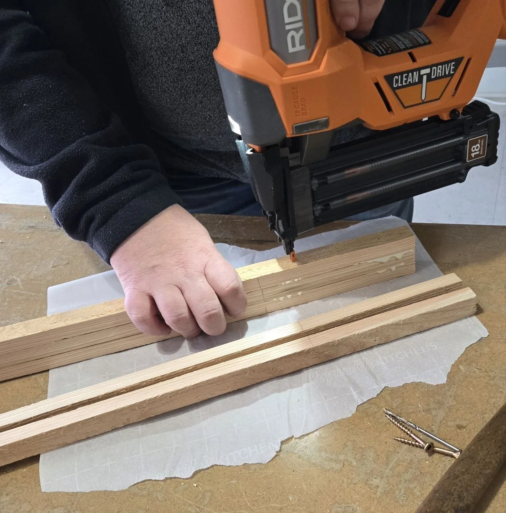
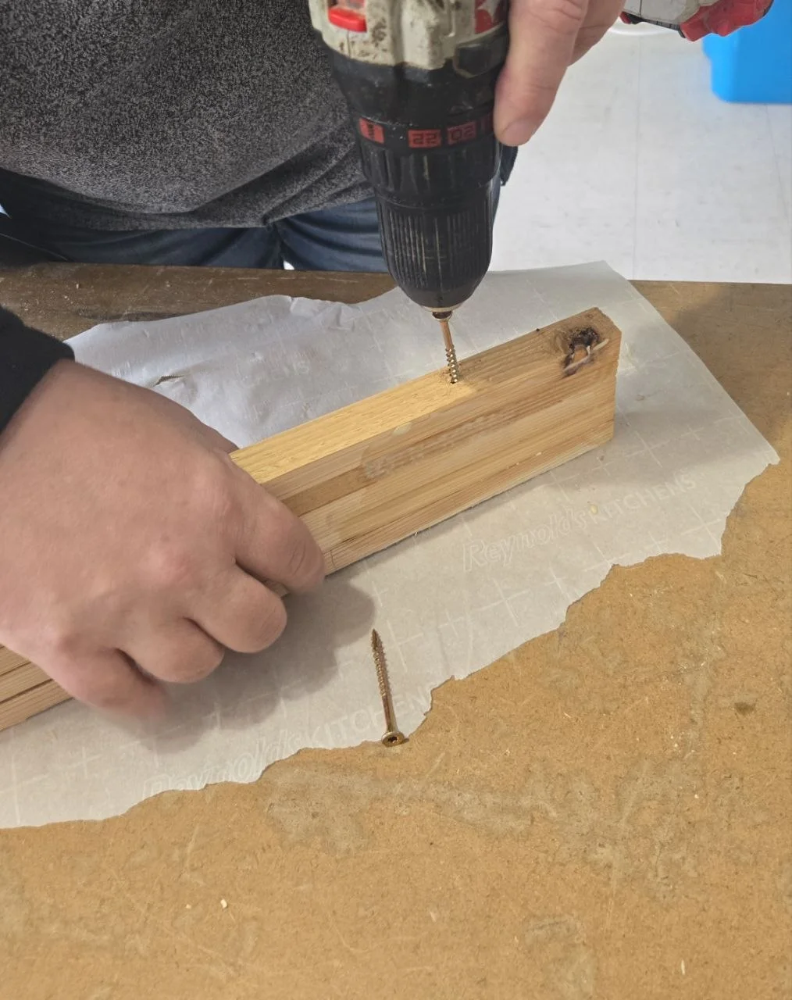
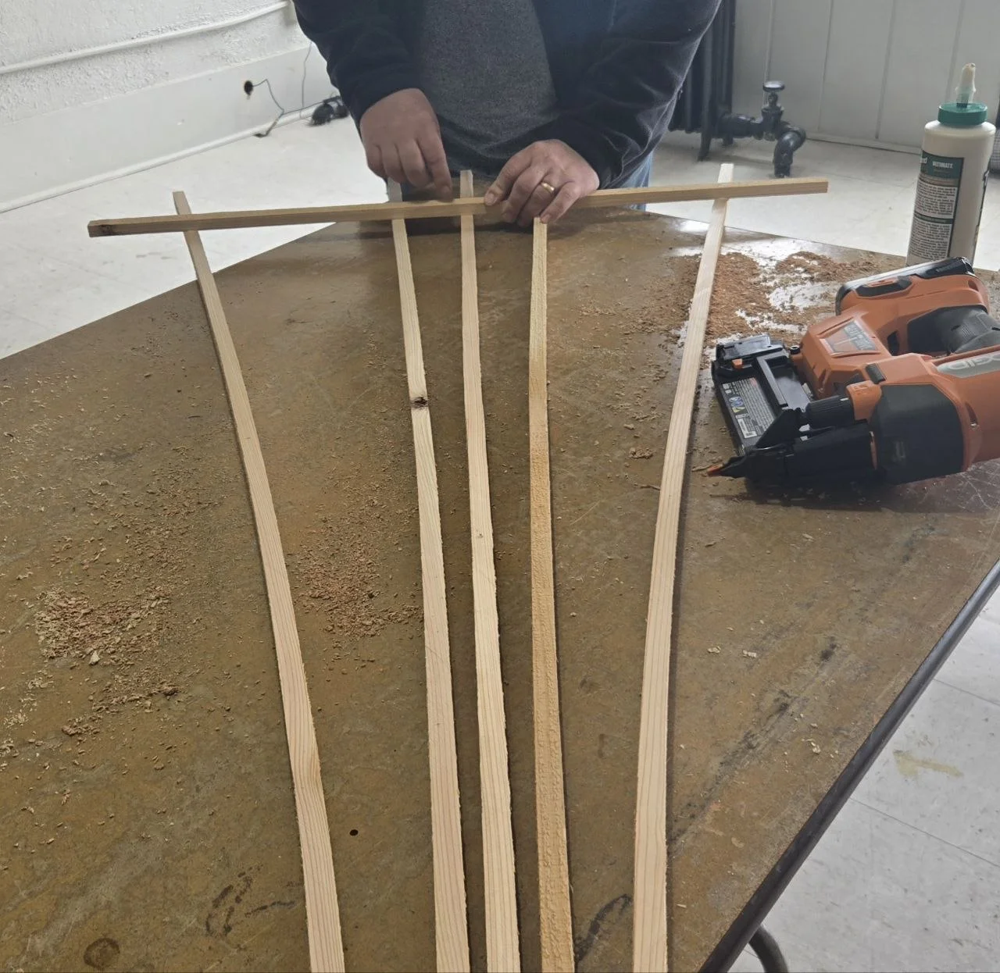
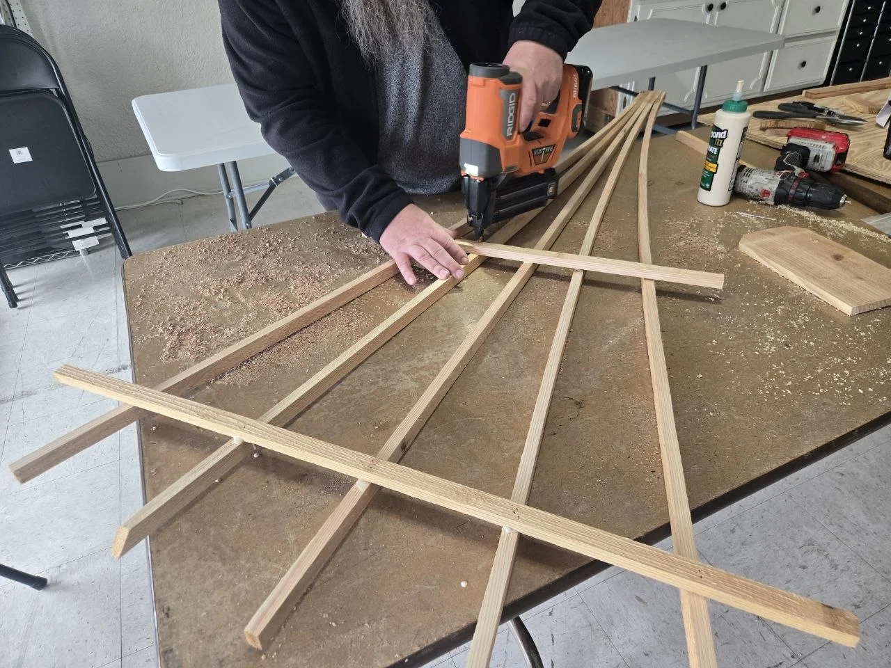
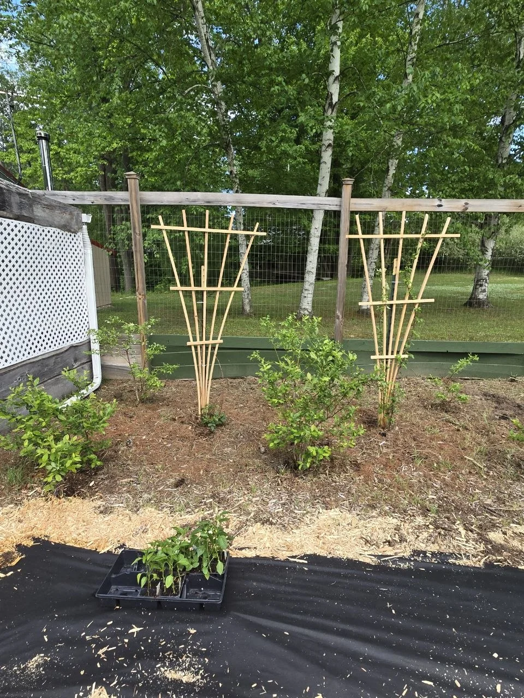

A little cedar.
A berry patch.
A reason to build.
Our one-picket raspberry trellis.
This is how ours came together: five strips, three spreaders, a fan shape and a few rough edges. A build story—not an exact blueprint.
Follow the build

Start with
what you’ve got.
- One cedar fence picket, ripped into five ⅞-inch fan strips.
- The roughly ½-inch leftover strip, cut into 1-, 2- and 3-foot spreaders.
- Glue, pin nails and a couple of screws for the base.
- A garden fence post for the installed support.
The source uses a table saw, pin nailer and drill. It does not document picket thickness, hardware specifications, blade setup or a complete cutting-safety method. Use appropriate tool instructions; this is the record of our build.
A fan shape.
One small step at a time.

01Make the base.
We measured up about 10 inches, then glued and pin-nailed the five fan strips together. The source also describes glue over the lower base area. That is what we tried, not a tested claim of rot protection.

02Give it a little more hold.
A couple of drilled holes and screws strengthened the base before opening the fan. We learned not to run the joined section too high, or the fan would not open well.

03Open the fan from the top.
We centered the 3-foot spreader by eye, then glued and pin-nailed the five fan pieces into place. Balanced enough mattered more than perfect.

04Then two feet. Then one.
The 2-foot and 1-foot spreaders followed. We kept them clear of the strengthened base so the shape could open naturally.
 05
05Give it a home outside.
A garden fence post made the installed trellis feel more solid. This is our attachment approach; the source does not establish wind or load capacity.

Good enough to use.
Worth making again.
The first little build made us happy enough to make another. The raspberries weren’t asking for perfect measurements. We wanted a useful shape and something to grow against.
What we’d carry forward: leave the base short enough to open the fan, keep the spreaders away from that joined section, and plan how the finished piece will stand outside.

Then the little build
joined the garden.
The late-May journal follows the cedar trellises into the raspberry and blackberry patch. That is the next chapter we can show—not a promised harvest or a long-term durability result.
See the trellises in the journal Follow things we’ve built